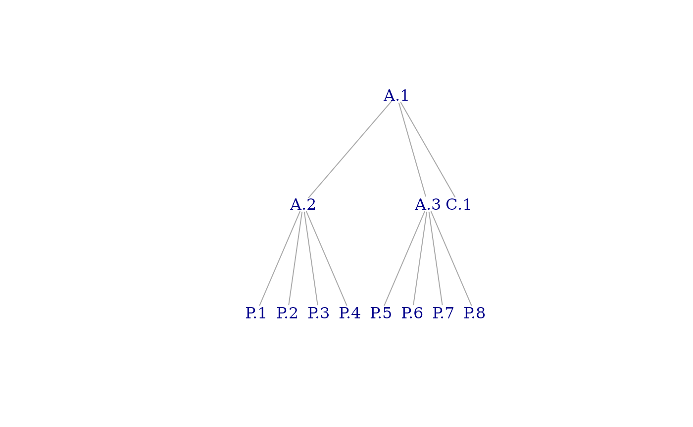

massProps
massProps.RmdOverview
The massProps package extends rollupTree
with functions to recursively calculate mass properties (and optionally,
their uncertainties). Formulas implemented are described in a technical
paper published by the Society of Allied Weight Engineers.(Zimmerman and Nakai 2005)
Synopsis
Data Structures
massProps operates on two fundamental data structures: a
mass properties table and a tree. The mass properties table has an entry
for every item in a tree structure of items; the edges of the tree
convey the parent-child relations among items. The two data structures
are linked by the id column of the data frame, which must
be a character vector of unique item identifiers, and the vertex names
of the tree. The sets of identifiers must be identical.
Mass Property Table
Required Columns for Mass Properties
The Mass Property Table must contain the following columns. Other columns may exist and will remain unmodified.
idunique identifier for each item (row)massmass of the item (numeric)Cx-component of center of mass (numeric)Cy-component of center of mass (numeric)Cx-component of center of mass (numeric)Ixxmoment of inertia about the axis (numeric)Iyymoment of inertia about the axis (numeric)Izzmoment of inertia about the axis (numeric)Ixyproduct of inertia relative to the and axes (numeric)Ixzproduct of inertia relative to the and axes (numeric)Iyzproduct of inertia relative to the and axes (numeric)POIconveither ‘+’ or ‘-’, indicating the sign convention for products of inertia1Ipointlogical indicator that this item is considered a point mass (i.e., its inertia contribution is negligible)2
Required Columns for Mass Properties Uncertainty
The following columns are required for uncertainty calculations:
σ_massmass uncertainty (numeric)σ_Cx-component of center of mass uncertainty (numeric)σ_Cy-component of center of mass uncertainty (numeric)σ_Cx-component of center of mass uncertainty (numeric)σ_Ixxmoment of inertia about the axis uncertainty (numeric)σ_Iyymoment of inertia about the axis uncertainty (numeric)σ_Izzmoment of inertia about the axis uncertainty (numeric)σ_Ixyproduct of inertia relative to the and axes uncertainty (numeric)σ_Ixzproduct of inertia relative to the and axes uncertainty (numeric)σ_Iyzproduct of inertia relative to the and axes uncertainty (numeric)
It is the caller’s responsibility to ensure that all values are expressed in appropriate and compatible units.
Tree
The tree is an igraph::graph with vertices named by
identifiers in the mass properties table. It can be of arbitrary depth
and shape as long as it satisfies certain well-formedness
properties:
it is connected and acyclic (as an undirected graph), i.e., it is a tree
it is directed, with edge direction going from child to parent
it contains neither loops (self-edges) nor multiple edges
it contains a single root vertex (i.e., one whose out degree is zero)
Invocation
Suppose we have the following mass properties table:
test_table
#> id parent mass Cx Cy Cz Ixx Ixy Ixz Iyy Iyz Izz POIconv Ipoint
#> 1 A.1 NA NA NA NA NA NA NA NA NA NA - FALSE
#> 2 A.2 A.1 NA NA NA NA NA NA NA NA NA NA - FALSE
#> 3 A.3 A.1 NA NA NA NA NA NA NA NA NA NA - FALSE
#> 4 C.1 A.1 5 0 0 0 80 -4.0 -24.0 80 -24.0 75 - FALSE
#> 5 P.1 A.2 2 1 1 1 4 -0.1 -0.1 4 0.1 4 - FALSE
#> 6 P.2 A.2 2 1 1 -1 4 -0.1 -0.1 4 0.1 4 - FALSE
#> 7 P.3 A.2 2 1 -1 1 4 -0.1 -0.1 4 0.1 4 - FALSE
#> 8 P.4 A.2 2 1 -1 -1 4 -0.1 -0.1 4 0.1 4 - FALSE
#> 9 P.5 A.3 2 -1 1 1 4 -0.1 -0.1 4 0.1 4 - FALSE
#> 10 P.6 A.3 2 -1 1 -1 4 -0.1 -0.1 4 0.1 4 - FALSE
#> 11 P.7 A.3 2 -1 -1 1 4 -0.1 -0.1 4 0.1 4 - FALSE
#> 12 P.8 A.3 2 -1 -1 -1 4 -0.1 -0.1 4 0.1 4 - FALSESuppose we also have this tree:
test_tree
#> IGRAPH d76039e DN-- 12 11 --
#> + attr: name (v/c)
#> + edges from d76039e (vertex names):
#> [1] A.2->A.1 A.3->A.1 C.1->A.1 P.1->A.2 P.2->A.2 P.3->A.2 P.4->A.2 P.5->A.3
#> [9] P.6->A.3 P.7->A.3 P.8->A.3
Then we can compute mass properties for non-leaf elements by calling
rollup_mass_props():
rollup_mass_props(test_tree, test_table)
#> id parent mass Cx Cy Cz Ixx Ixy Ixz Iyy Iyz Izz POIconv Ipoint
#> 1 A.1 21 0 0 0 144 -4.8 -24.8 144 -23.2 139 - FALSE
#> 2 A.2 A.1 8 1 0 0 32 -0.4 -0.4 24 0.4 24 - FALSE
#> 3 A.3 A.1 8 -1 0 0 32 -0.4 -0.4 24 0.4 24 - FALSE
#> 4 C.1 A.1 5 0 0 0 80 -4.0 -24.0 80 -24.0 75 - FALSE
#> 5 P.1 A.2 2 1 1 1 4 -0.1 -0.1 4 0.1 4 - FALSE
#> 6 P.2 A.2 2 1 1 -1 4 -0.1 -0.1 4 0.1 4 - FALSE
#> 7 P.3 A.2 2 1 -1 1 4 -0.1 -0.1 4 0.1 4 - FALSE
#> 8 P.4 A.2 2 1 -1 -1 4 -0.1 -0.1 4 0.1 4 - FALSE
#> 9 P.5 A.3 2 -1 1 1 4 -0.1 -0.1 4 0.1 4 - FALSE
#> 10 P.6 A.3 2 -1 1 -1 4 -0.1 -0.1 4 0.1 4 - FALSE
#> 11 P.7 A.3 2 -1 -1 1 4 -0.1 -0.1 4 0.1 4 - FALSE
#> 12 P.8 A.3 2 -1 -1 -1 4 -0.1 -0.1 4 0.1 4 - FALSEThe input may also contain uncertainty data. This example is from the Society of Allied Weight Engineers:
sawe_input
#> id mass Cx Cy Cz Ixx Iyy Izz Ixy Ixz
#> 1 Widget 57.83 121.2 0.04 -0.16 7258.90 8607.02 10453.40 834.44 -1198.38
#> 2 2nd Part 16.80 70.9 -0.95 0.46 65.07 1124.65 1078.82 76.01 202.83
#> 3 Combined NA NA NA NA NA NA NA NA NA
#> Iyz σ_mass σ_Cx σ_Cy σ_Cz σ_Ixx σ_Iyy σ_Izz σ_Ixy
#> 1 -1066.58 1.2416 0.2764 0.2085 0.0669 386.9233 171.4792 414.5547 1440.5402
#> 2 13.62 1.7308 0.6234 0.5173 0.1405 12.4687 109.1324 108.5481 55.8879
#> 3 NA NA NA NA NA NA NA NA NA
#> σ_Ixz σ_Iyz Ipoint POIconv
#> 1 344.6237 124.6860 FALSE +
#> 2 212.1241 11.5408 FALSE +
#> 3 NA NA FALSE +
rollup_mass_props_and_unc(sawe_tree, sawe_input)
#> id mass Cx Cy Cz Ixx Iyy Izz
#> 1 Widget 57.83 121.2000 0.0400000 -0.16000000 7258.900 8607.02 10453.40
#> 2 2nd Part 16.80 70.9000 -0.9500000 0.46000000 65.070 1124.65 1078.82
#> 3 Combined 74.63 109.8769 -0.1828594 -0.02043146 7341.733 42673.75 44482.05
#> Ixy Ixz Iyz σ_mass σ_Cx σ_Cy σ_Cz σ_Ixx
#> 1 834.440 -1198.380 -1066.580 1.24160 0.27640 0.2085000 0.06690000 386.9233
#> 2 76.010 202.830 13.620 1.73080 0.62340 0.5173000 0.14050000 12.4687
#> 3 1558.714 -1401.534 -1060.951 2.13008 0.95821 0.1999847 0.06178402 387.4017
#> σ_Iyy σ_Izz σ_Ixy σ_Ixz σ_Iyz Ipoint POIconv
#> 1 171.4792 414.5547 1440.5402 344.6237 124.6860 FALSE +
#> 2 109.1324 108.5481 55.8879 212.1241 11.5408 FALSE +
#> 3 2789.3133 2815.3260 1488.0948 418.6048 125.3175 FALSE +Objectives and Strategy
The objective of this package is to provide a trustworthy, well-documented, reference implementation for computation of mass properties (and their uncertainties) of aggregate objects from those of their parts. Aggregation can be recursive (e.g., indentured Bill of Materials), so it must accommodate trees of arbitrary depth and shape.
Strategies for achieving the objective include
basing the calculations on published industry references,
re-casting those lengthy reference equations into concise vector or matrix forms to reduce the error surface for source code and exploit the capabilities of
R, which treats vectors and matrices as first-class objects,delegating orchestration to the
rollupTreepackage, which, among other things, verifies that the input tree is well-formed and ensures proper ordering of computations,ensuring that all asserted leaf mass properties and uncertainties correspond to physically-realizable objects,
coding in pure functional style, (i.e., avoiding mutable variables, implying iteration with
Map()andReduce()), andcovering the entire code base with unit tests.
The author has intentionally made no effort to optimize for performance. That said, in its current form it handles computations on the scale encountered in the design of interplanetary spacecraft in a few seconds.
Theory
In this section, we state the reference equations (Zimmerman and Nakai 2005) and show, where applicable, how those equations can be rewritten in more concise form. The form of the equations actually implemented is displayed within a box, e.g. .
The reference uses the word weight and the symbol in equations. We interpret weight as mass. The reference refers to center of mass by its , , and components. Symbols for moments () and products () of inertia are conventional. Variables with subscripts designate properties of parts; those without designate properties of aggregates. The letter denotes uncertainty. , for example, is the mass uncertainty
Mass Properties
Mass
The mass equation is suitable as is.
The corresponding R code is
In this and the following code snippets, the variable vl
is a list of input mass property sets, the variable v is a
formal parameter of an anonymous function applied to each member of
vl, and r is the resulting mass properties.
The line above is an R functional programming idiom for
“set the mass value of the result to the sum of the mass values of the
inputs”.
Inertia Tensor
Matrix Formulation
Let be the inertia tensor of the aggregate and be that of part . The equations for products of inertia above clearly follow the positive integral convention, so
and similarly for .
Noting the repeated appearance of terms of the form , we form the outer product
Then
Let be the matrix of inertia tensor summands from the reference equations. That is,
where
where is the identity matrix. Therefore
The corresponding R code is
Mass Property Uncertainties
Center of Mass Uncertainty
As before, we create a 3-vector for center of mass uncertainties. Let
If we construe (as R does) squaring and taking square
roots of vectors element-wise, then
The corresponding R code is
Inertia Tensor Uncertainty
Matrix Formulation
Let
Then
Let be the matrix of inertia tensor uncertainty summands in the standard formulas for a given subcomponent above. That is,
Let , , and be the respective diagonal elements of . If we interpret squaring a matrix as the Hadamard (element-wise) product with itself, then
Finally,
The corresponding R code is
r$sigma_inertia = sqrt(Reduce(`+`, Map(
f = function(v) {
d <- r$center_mass - v$center_mass
P <- outer(d, v$sigma_center_mass)
p <- diag(P)
diag_1 <- diag(c(p['x'] - 2 * p['y'], p['y'] - 2 * p['x'], p['z'] - 2 * p['x']))
diag_2 <- diag(c(p['x'] - 2 * p['z'], p['y'] - 2 * p['z'], p['z'] - 2 * p['y']))
Q <- outer(d, d)
diag_3 <- sum(diag(Q)) * diag(3)
v$sigma_inertia^2 +
v$mass^2 * ((P - diag_1)^2 + (t(P) - diag_2)^2) +
(v$sigma_mass * (Q - diag_3))^2
},
vl
)))Testing and Validation
In this section we will calculate the answers for the SAWE step by step and compare them with the package results. The inputs are:
#> id mass Cx Cy Cz Ixx Iyy Izz Ixy Ixz
#> 1 Widget 57.83 121.2 0.04 -0.16 7258.90 8607.02 10453.40 834.44 -1198.38
#> 2 2nd Part 16.80 70.9 -0.95 0.46 65.07 1124.65 1078.82 76.01 202.83
#> Iyz σ_mass σ_Cx σ_Cy σ_Cz σ_Ixx σ_Iyy σ_Izz σ_Ixy
#> 1 -1066.58 1.2416 0.2764 0.2085 0.0669 386.9233 171.4792 414.5547 1440.5402
#> 2 13.62 1.7308 0.6234 0.5173 0.1405 12.4687 109.1324 108.5481 55.8879
#> σ_Ixz σ_Iyz Ipoint POIconv
#> 1 344.6237 124.6860 FALSE +
#> 2 212.1241 11.5408 FALSE +Our computed result is
sawe_result <- rollup_mass_props_and_unc(sawe_tree, sawe_table)[3, ]
sawe_result
#> id mass Cx Cy Cz Ixx Iyy Izz
#> 3 Combined 74.63 109.8769 -0.1828594 -0.02043146 7341.733 42673.75 44482.05
#> Ixy Ixz Iyz σ_mass σ_Cx σ_Cy σ_Cz σ_Ixx
#> 3 1558.714 -1401.534 -1060.951 2.13008 0.95821 0.1999847 0.06178402 387.4017
#> σ_Iyy σ_Izz σ_Ixy σ_Ixz σ_Iyz Ipoint POIconv
#> 3 2789.313 2815.326 1488.095 418.6048 125.3175 FALSE +Mass
mass <- sum(sawe_input$mass)The independently-calculated mass is
#> [1] 74.63This agrees with the computed result.
Center of Mass
The independently-calculated center of mass is
#> Cx Cy Cz
#> 109.87693957 -0.18285944 -0.02043146This agrees with the computed result.
Moments of Inertia
moi <- function(I, v1, v2, m, c1, c2) {
I + m * ((v1^2 + v2^2) - (c1^2 + c2^2))
}
MOI <- c(
Ixx = sum(moi(sawe_input$Ixx, sawe_input$Cy, sawe_input$Cz, sawe_input$mass, C["Cy"], C["Cz"])),
Iyy = sum(moi(sawe_input$Iyy, sawe_input$Cx, sawe_input$Cz, sawe_input$mass, C["Cx"], C["Cz"])),
Izz = sum(moi(sawe_input$Izz, sawe_input$Cx, sawe_input$Cy, sawe_input$mass, C["Cx"], C["Cy"]))
)The independently-calculated moments of inertia are
#> Ixx Iyy Izz
#> 7341.733 42673.747 44482.052This agrees with the computed result.
Products of Inertia
poi <- function(I, v1, v2, m, c1, c2) {
I + m * (v1 * v2 - c1 * c2)
}
POI <- c(
Ixy = sum(poi(sawe_input$Ixy, sawe_input$Cx, sawe_input$Cy, sawe_input$mass, C["Cx"], C["Cy"])),
Ixz = sum(poi(sawe_input$Ixz, sawe_input$Cx, sawe_input$Cz, sawe_input$mass, C["Cx"], C["Cz"])),
Iyz = sum(poi(sawe_input$Iyz, sawe_input$Cy, sawe_input$Cz, sawe_input$mass, C["Cy"], C["Cz"]))
)The independently-calculated products of inertia are
#> Ixy Ixz Iyz
#> 1558.714 -1401.534 -1060.951This agrees with the computed result.
Mass Uncertainty
The independently-calculated mass uncertainty is
#> [1] 2.13008This agrees with the computed result.
Center of Mass Uncertainty
sigma_cm <- function(m, sigma_v, sigma_m, v, c) {
(m * sigma_v)^2 + (sigma_m * (v - c))^2
}
sigma_C <- c(
sigma_Cx = sqrt(sum(sigma_cm(sawe_input$mass, sawe_input$`σ_Cx`, sawe_input$`σ_mass`, sawe_input$Cx, C["Cx"]))) / mass,
sigma_Cy = sqrt(sum(sigma_cm(sawe_input$mass, sawe_input$`σ_Cy`, sawe_input$`σ_mass`, sawe_input$Cy, C["Cy"]))) / mass,
sigma_Cz = sqrt(sum(sigma_cm(sawe_input$mass, sawe_input$`σ_Cz`, sawe_input$`σ_mass`, sawe_input$Cz, C["Cz"]))) / mass
)The independently-calculated center of mass uncertainty is
#> sigma_Cx sigma_Cy sigma_Cz
#> 0.95821004 0.19998470 0.06178402This agrees with the computed result.